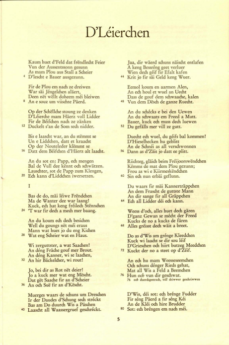
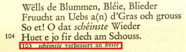

Get text from pdfs or images using OCR: a tutorial with {tesseract} and {magick}
March 31, 2019In this blog post I’m going to show you how you can extract text from scanned pdf files, or pdf files where no text recognition was performed. (For pdfs where text recognition was performed, you can read my other blog post).
The pdf I’m going to use can be downloaded from here. It’s a poem titled, D’Léierchen (Dem Léiweckerche säi Lidd), written by Michel Rodange, arguably Luxembourg’s most well known writer and poet. Michel Rodange is mostly known for his fable, Renert oder De Fuuß am Frack an a Ma’nsgrëßt, starring a central European trickster anthropomorphic red fox.

Anyway, back to the point of this blog post. How can we get data from a pdf where no text recognition was performed (or, how can we get text from an image)? The pdf we need the text from looks like this:

To get the text from the pdf, we can use the {tesseract} package, which provides bindings to the tesseract program.
tesseract is an open source OCR engine developed by Google. This means that first you will need
to install the tesseract program on your system. You can follow the intructions from tesseract’s
github page. tesseract is currently at version 4.
Before applying OCR to a pdf, let’s first use the {pdftools} package to convert the pdf to png.
This is because {tesseract} requires images as input (if you provide a pdf file, it will
converted on the fly). Let’s first load the needed packages:
library(tidyverse)
library(tesseract)
library(pdftools)
library(magick)And now let’s convert the pdf to png files (in plural, because we’ll get one image per page of the pdf):
pngfile <- pdftools::pdf_convert("path/to/pdf", dpi = 600)This will generate 14 png files. I erase the ones that are not needed, such as the title page. Now, let’s read in all the image files:
path <- dir(path = "path/to/pngs", pattern = "*.png", full.names = TRUE)
images <- map(path, magick::image_read)The images object is a list of magick-images, which we can parse. BUUUUUT! There’s a problem.
The text is laid out in two columns. Which means that the first line after performing OCR will be
the first line of the first column, and the first line of the second column joined together. Same
for the other lines of course. So ideally, I’d need to split the file in the middle, and then
perform OCR. This is easily done with the {magick} package:
first_half <- map(images, ~image_crop(., geometry = "2307x6462"))
second_half <- map(images, ~image_crop(., geometry = "2307x6462+2307+0"))Because the pngs are 4614 by 6962 pixels, I can get the first half of the png by cropping at “2307x6462” (I decrease the height a bit to get rid of the page number), and the second half by applying the same logic, but starting the cropping at the “2307+0” position. The result looks like this:

Much better! Now I need to join these two lists together. I cannot simply join them. Consider the following example:
one <- list(1, 3, 5)
two <- list(2, 4, 6)This is the setup I currently have; first_half contains odd pages, and second_half contains
even pages. The result I want would look like this:
list(1, 2, 3, 4, 5, 6)## [[1]]
## [1] 1
##
## [[2]]
## [1] 2
##
## [[3]]
## [1] 3
##
## [[4]]
## [1] 4
##
## [[5]]
## [1] 5
##
## [[6]]
## [1] 6There is a very elegant solution, with reduce2() from the {purrr} package. reduce() takes one
list and a function, and … reduces the list to a single element. For instance:
reduce(list(1, 2, 3), paste)## [1] "1 2 3"reduce2() is very similar, but takes in two lists, but the second list must be one element shorter:
reduce2(list(1, 2, 3), list("a", "b"), paste)## [1] "1 2 a 3 b"So we cannot simply use reduce2() on lists one and two, because they’re the same length. So let’s
prepend a value to one, using the prepend() function of {purrr}:
prepend(one, 0) %>%
reduce2(two, c)## [1] 0 1 2 3 4 5 6Exactly what we need! Let’s apply this trick to our lists:
merged_list <- prepend(first_half, NA) %>%
reduce2(second_half, c) %>%
discard(is.na)I’ve prepended NA to the first list, and then used reduce2() and then used discard(is.na) to
remove the NA I’ve added at the start. Now, we can use OCR to get the text:
text_list <- map(merged_list, ocr)ocr() uses a model trained on English by default, and even though there is a model trained on
Luxembourguish, the one trained on English works better! Very likely because the English model was trained
on a lot more data than the Luxembourguish one. I was worried the English model was not going to
recognize characters such as é, but no, it worked quite well.
This is how it looks like:
text_list
[[1]]
[1] "Lhe\n| Kaum huet d’Feld dat fréndlecht Feier\nVun der Aussentssonn gesunn\nAs mam Plou aus Stall a Scheier\n* D’lescht e Bauer ausgezunn.\nFir de Plou em nach ze dreiwen\nWar sai Jéngelchen alaert,\nDeen nét wéllt doheem méi bleiwen\n8 An esouz um viischte Paerd.\nOp der Schéllche stoung ze denken\nD’Léierche mam Hierz voll Lidder\nFir de Béifchen nach ze zanken\n12 Duckelt s’an de Som sech nidder.\nBis e laascht war, an du stémmt se\nUn e Liddchen, datt et kraacht\nOp der Nouteleder klémmt se\n16 Datt dem Béifchen d’Haerz alt laacht.\nAn du sot en: Papp, ech mengen\nBal de Vull dee kénnt och schwatzen.\nLauschter, sot de Papp zum Klengen,\n20 Ech kann d’Liddchen iwersetzen.\nI\nBas de do, mii léiwe Fréndchen\nMa de Wanter dee war laang!\nKuck, ech hat keng fréilech Sténnchen\n24 *T war fir dech a mech mer baang.\nAn du koum ech dech besichen\nWell du goungs nét méi eraus\nMann wat hues jo du eng Kichen\n28 Wat eng Scheier wat en Haus.\nWi zerguttster, a wat Saachen!\nAn déng Frache gouf mer Brout.\nAn déng Kanner, wi se laachen,\n32, An hir Backelcher, wi rout!\nJo, bei dir as Rot nét deier!\nJo a kuck mer wat eng Méscht.\nDat gét Saache fir an d’Scheier\n36 An och Sué fir an d’Késcht.\nMuerges waars de schuns um Dreschen\nIr der Daudes d’Schung sech stréckt\nBas am Do duurch Wis a Paschen\n40 Laascht all Waassergruef geschréckt.\n"
....
....We still need to split at the "\n" character:
text_list <- text_list %>%
map(., ~str_split(., "\n"))The end result:
text_list
[[1]]
[[1]][[1]]
[1] "Lhe" "| Kaum huet d’Feld dat fréndlecht Feier"
[3] "Vun der Aussentssonn gesunn" "As mam Plou aus Stall a Scheier"
[5] "* D’lescht e Bauer ausgezunn." "Fir de Plou em nach ze dreiwen"
[7] "War sai Jéngelchen alaert," "Deen nét wéllt doheem méi bleiwen"
[9] "8 An esouz um viischte Paerd." "Op der Schéllche stoung ze denken"
[11] "D’Léierche mam Hierz voll Lidder" "Fir de Béifchen nach ze zanken"
[13] "12 Duckelt s’an de Som sech nidder." "Bis e laascht war, an du stémmt se"
[15] "Un e Liddchen, datt et kraacht" "Op der Nouteleder klémmt se"
[17] "16 Datt dem Béifchen d’Haerz alt laacht." "An du sot en: Papp, ech mengen"
[19] "Bal de Vull dee kénnt och schwatzen." "Lauschter, sot de Papp zum Klengen,"
[21] "20 Ech kann d’Liddchen iwersetzen." "I"
[23] "Bas de do, mii léiwe Fréndchen" "Ma de Wanter dee war laang!"
[25] "Kuck, ech hat keng fréilech Sténnchen" "24 *T war fir dech a mech mer baang."
[27] "An du koum ech dech besichen" "Well du goungs nét méi eraus"
[29] "Mann wat hues jo du eng Kichen" "28 Wat eng Scheier wat en Haus."
[31] "Wi zerguttster, a wat Saachen!" "An déng Frache gouf mer Brout."
[33] "An déng Kanner, wi se laachen," "32, An hir Backelcher, wi rout!"
[35] "Jo, bei dir as Rot nét deier!" "Jo a kuck mer wat eng Méscht."
[37] "Dat gét Saache fir an d’Scheier" "36 An och Sué fir an d’Késcht."
[39] "Muerges waars de schuns um Dreschen" "Ir der Daudes d’Schung sech stréckt"
[41] "Bas am Do duurch Wis a Paschen" "40 Laascht all Waassergruef geschréckt."
[43] ""
...
...Perfect! Some more cleaning would be needed though. For example, I need to remove the little annotations that are included:

I don’t know yet how I’m going to do that.I also need to remove the line numbers at the beginning of every fourth line, but this is easily done with a simple regular expression:
str_remove_all(c("12 bla", "blb", "123 blc"), "^\\d{1,}\\s+")## [1] "bla" "blb" "blc"But this will be left for a future blog post!
Hope you enjoyed! If you found this blog post useful, you might want to follow me on twitter for blog post updates and buy me an espresso or paypal.me.